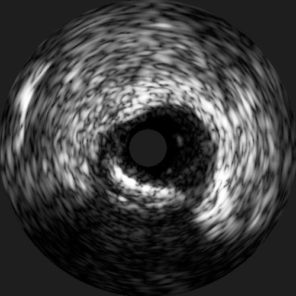
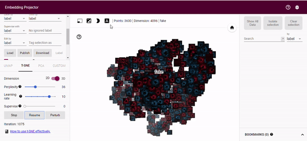

- Wed 19 February 2020
- Tensorflow
- #Tensorflow, #GAN
In this post I'm going to visualize intravascular ultrasound (IVUS) images I generated using a generative adversarial network (GAN) and see if the t-SNE algorithm can seperate the images based on the raw pixels. The hypothesis is that if the generated images are visually different from real images t-SNE will identify this and we will be able to see 2 different clusters. First, I will briefly describe what IVUS images are, the image generation process and then talk about the results. If you just want to play with the projector click here.
Intravascular Ultrasound (IVUS)
IVUS images are, as the name suggests, ultrasound images. The intravascular part of the name comes from the fact that the images are acquired from within an artery, as opposed to traditional ultrasound where images are acquired outside of the body. To acquire images inside of the artery the ultrasound probe is placed on a catheter and this is then inserted into the vessel of interest. IVUS is most frequently used to get high resolution images of the coronary arteries during a cardiac catheterization. These high resolution images provide much more accurate measurements of the lumen diameter and also allow the interventional cardiologist to see what type of plaque is in the artery. This knowledge allows the interventional cardiologist to know what size stent to use and how to approach expanding the stent. Below you can see an example of an IVUS image. These are 2D cross-sections of an artery and as the catheter is pulled back through the artery a whole stack of these 2D images are acquired so that the interventional cardiologist can see the entire artery.

Training the GAN
For a good description of generative adversarial networks (GANs) see here, but it is essentially a neural network that learns to generate new images from a training dataset. For this work I used the SPADE algorithm. This is a GAN where the user provides the labelmap of the image as well as the image in the training dataset. SPADE uses a normalization layer that preserves the semantic content from the labelmap in the generated image. I trained the model from scratch for 50 epochs using the default parameters. At inference the user supplies a labelmap and the trained algorithm will generate a new image. The generated images were of excellent quality and for those interested in seeing if they can differentiate between real and generated images check out the below tweet.
Tweet of DavidSMolony/1185237368057597954
Running t-SNE with the Tensorflow Projector
The tensorflow projector is a nice tool that allows us to visualize high-dimensional data such as images or word vectors in 2D or 3D space. You can use either Principal Component Analysis (PCA) or t-distributed Stochastic Neighbouring Embedding (t-SNE) for this purpose. t-SNE works by converting similarities between data points to joint probabilities and then tries to minimize the KL divergence between the joint probabilities of the low-dimensional embedding and the high-dimensional data. For an awesome breakdown of t-SNE this is a great resource. There are suggestions that the dimensionality should be reduced to 50 prior to running t-SNE, in my own assessment this did not seem to have a visual impact.
I generated 1,800 IVUS images using SPADE and along with 1,800 real IVUS images reduced their dimensions by performing nearest neighbour interpolation of the original 500x500 image to 64x64. The 64x64 image is flattened to a vector of dimension 4,096 and is then saved to file for each IVUS image. I also supply a metadata file which indicates whether an image is real of fake (generated). To take a look at these files and how I created the embeddings visit here.
Results
You can run the algorithm yourself by clicking here where you will be able to manipulate the view of 3D space. In the image below, which is taken after 1000 iterations of t-SNE, you can see that the blue (generated/fake) images and red (real) images are inseparable. This suggests that - with respect to our input dimensionality - the generated images are from the same distribution as the real images.

Relabeling
The real nice thing about the tensorflow projector is that we can perform relabeling of our generated images based on the t-SNE output. By using the bounding box selection tool we can select images close to our real distribution and relabel these as real (or whatever label we want). This gives us an easy way of finding good generated images to augment a training dataset with. We can then just download the new metadata.

Summary
Obviously there are much better ways of assessing whether images are real of fake than just the raw pixels. Passing the images through the GAN discriminator would produce a far denser and feature rich representation. However, it is interesting to look at images at the raw pixel level and to see if they cluster together. The fact that only one cluster is visible over our real and generated image dataset appears to indicate that the generated images have matched the real image distribution quite nicely.